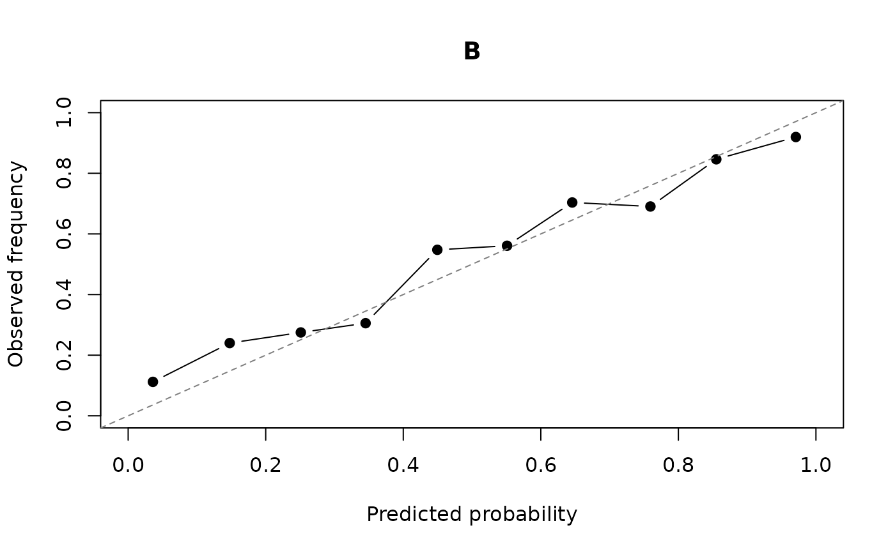

soft_lm() requires the class probabilities to be calibrated
given the controls, \(E[1\{G = k\} \mid p, X] = p_k\), which is stronger
than the marginal calibration targeted by Platt scaling or isotonic
regression. calibration_check() tests both on a sample where the
group is observed.
Arguments
- probs
[mandatory] (matrix, data.frame, character, formula or numeric) Class probabilities for the labelled observations, in any form accepted by
soft_lm().- group
[mandatory] (vector or character) Observed category labels: a vector or a column name of
data. Labels must match the category names ofprobs; for a numeric probability vector use 0/1 orFALSE/TRUE.- data
[optional] (data.frame) Data frame holding the variables referred to by name (default:
NULL).- controls
[optional] (formula, data.frame or matrix) Controls as a one-sided formula evaluated in
data, or as a data frame or matrix.NULLtests marginal calibration only (default:NULL).- degree
[optional] (integer) Degree of the polynomial in the logit of the probability (default:
3).- by
[optional] (vector, character or formula) Grouping variable for subgroup calibration gaps: a vector, a column name of
dataor a one-sided formula (default:NULL).- bins
[optional] (integer) Number of equal-width probability bins for the ECE and the reliability curves (default:
10).- weights
[optional] (numeric, character or formula) Observation weights. With non-integer weights the likelihood-ratio tests are approximate (default:
NULL).- min_cell
[optional] (integer) Smallest subgroup or bin size used for the largest gap (default:
25).- x
[mandatory] (softcats_calibration) Result of
calibration_check().- digits
[optional] (integer) Number of significant digits to print (default:
3).- ...
[optional] Not used.
Value
An object of class softcats_calibration: a list with
table (one row per tested category), delta_hat,
delta_source, reliability (binned mean probabilities and
frequencies) and nobs. delta_hat is NA when no
cell has at least min_cell observations. The print and plot
methods return x invisibly.
Details
For each category (one category suffices for a binary group), the indicator of that category is regressed by logistic regression on a polynomial in the logit of its probability and on the controls, with the logit as an offset, so that the null model is perfect calibration. This extends the logistic recalibration model of Cox (1958).
The overall test compares the full model with the offset-only model. It detects any departure from calibration, marginal or conditional.
The conditional test compares the full model with the model without the controls. It detects miscalibration that depends on the controls and that marginal recalibration does not remove.
Both are likelihood-ratio tests; p-values are Holm-adjusted across
categories. The function also reports the expected calibration error
(ECE, equal-width bins), the Brier score and the largest calibration
gap, within subgroups if by is given and within score bins
otherwise. Raw gaps in small cells are dominated by sampling noise, so
each gap is also reported net of a Bonferroni-corrected multiple of its
standard error under perfect calibration. The largest net gap is
returned as delta_hat, an estimate of the drift magnitude for
drift_sensitivity(); it is zero when no cell departs from
calibration by more than chance. When the tests reject,
recalibrate() recalibrates the probabilities on the score
and the controls together.
References
Cox, D. R. (1958). Two further applications of a model for binary regression. Biometrika, 45(3–4), 562–565. doi:10.1093/biomet/45.3-4.562
Holm, S. (1979). A simple sequentially rejective multiple test procedure. Scandinavian Journal of Statistics, 6(2), 65–70.
Kurbucz, M. T. (2026). When to trust confidence thresholding: Calibration diagnostics for pseudo-labelled regression. arXiv preprint. doi:10.48550/arXiv.2605.12780
Examples
# Example: Probabilities miscalibrated given the first control
d <- sim_softcats(n = 3000, K = 2, miscalibration = 0.8, seed = 7)
lab <- d[d$labelled, ]
cc <- calibration_check(probs = c("prob_A", "prob_B"), group = "group",
data = lab, controls = ~ x1 + x2 + x3)
cc
#> Calibration check on 594 labelled observations
#>
#> category ECE Brier overall p conditional p max gap net of noise
#> B 0.056 0.16 <1e-04 <1e-04 0.0981 0.0299
#>
#> Largest calibration gap beyond sampling noise (score bins): 0.0299
#> p-values are from Holm-adjusted likelihood-ratio tests of perfect calibration
#> (polynomial of degree 3 in the logit).
#> The probabilities are miscalibrated given the controls. Recalibrating on the
#> score alone (Platt, isotonic) does not repair this. recalibrate() recalibrates
#> on the score and the controls together, and drift_sensitivity() bounds the bias.
plot(cc)
